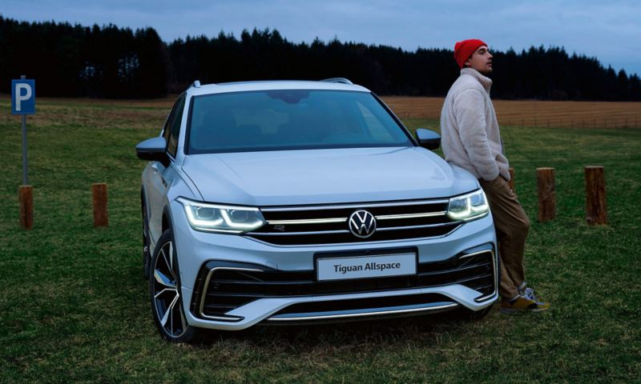
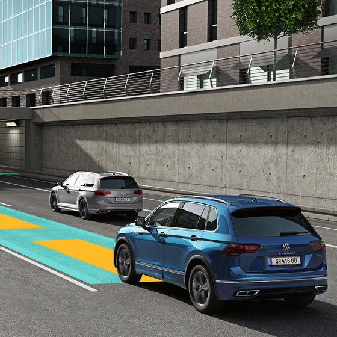

LKSWAGEN
LKSWAGEN
Tiguan Allspace
Tiguan Allspace. Her Hayale Yer Var.
Tiguan Allspace’in, Tiguan’dan 22 cm daha uzun gövdesi ona yalnızca güçlü ve ağırbaşlı bir görünüm kazandırmakla kalmıyor, rahat ve keyifli yolculukların yanı sıra geniş bir bagaj hacmini de beraberinde getiriyor. Üstelik Tiguan Allspace'te sunulan 3. koltuk sırası, 7 kişiye kadar geniş aileler için oldukça kullanışlı. Kısacası Tiguan Allspace, herkes ve her plan için her zaman hazır.
Tasarım

Dinamik bir görünüm.
Tiguan Allspace'in ultra yüksek teknolojili ve yapay zeka algoritmalarıyla yönetilen IQ.LIGHT – LED Matrix farları (E) (R) aktif sürüş güvenliğini en üst düzeyde destekler. Sistem donanımında bulunan bağımsız LED modüller, sürüş, hava ve yol durumuna bağlı olarak bağımsız şekilde hareket edebilir ya da Dinamik Uzun Far Asistanı "Dynamic Light Assist" (O) ile birleştiğinde trafikteki diğer araçların sürücülerinin gözlerini kamaştırmamak için kısmen açılıp kapanabilir. Bu esneklik size her koşulda optimum ışık dağılımı sağlarken, sürüş sırasında sadece sizi değil, önünüzdeki veya arkanızdaki herkesi rahatlatır.
KONFOR

Tüm ailenize yer var.
Tiguan Allspace gerçek yolculuk konforunu size ve tüm sevdiklerinize oldukça cömert bir biçimde sunar. Tiguan Allspace, üçüncü koltuk sırası sayesinde yedi kişiye kadar oturma alanına ve 760 litreden 1.920 litreye kadar arttırılabilen bir bagaj hacmine sahiptir. Maksimum 1,60 m boyuna sahip yolcular için ideal bir oturma hacmi sunan üçüncü koltuk sırası, kullanılmadığı durumlarda katlanabilir ve bagaj zemini ile aynı hizaya gelir. (O
Teknoloji

Esnek, verimli ve güçlü.
Tiguan Allspace'in motorları güçlü olduğu kadar ekonomik de. Bu nedenle otomobil kullanmayı seven; fakat yakıt tüketimini düşük tutmak isteyenler için Tiguan Allspace TSI, mükemmel bir seçenek. Turboşarjlı Kademeli Enjeksiyon "TSI" teknolojisi, turbo boşluğuna sahip olmayan, en alt devirlerde dahi devreye girebilen hafif ve etkin bir egzoz turboşarjı ile Volkswagen'in geçmiş FSI motorlarından gelen direkt benzin enjeksiyon sistemini birleştirir. Bu sayede çok daha küçük motor hacimlerinden, çok daha fazla beygir gücü (PS) ve çekiş gücü (Tork) elde edilir. Defalarca Uluslararası Yılın Motoru "Engine of the Year" ödülü kazanan Volkswagen'in efsanevi TSI motorlarını denemeden, yüksek performansı, düşük tüketimle birleştiren gerçek bir modern benzinli motorla karşılaşmamışsınız demektir.
Güvenlik

Her zaman doğru yolda kalın.
Yarı Otonom Sürüş Asistanı "Travel Assist", son derece pratik bir sürüş destek sistemidir. Monoton ve yorucu sürüş durumlarında, Tiguan Allspace'in çok fonksiyonlu direksiyonu üzerinde bulunan dokunmatik bir yüzeye dokunarak sistemi aktive edebilir, konforlu ve güvenli bir yolculuğun keyfini sürebilirsiniz. Sistem, içeriğinde barındırdığı radar, sensör ve kameralar yardımıyla şerit çizgilerini takip eder, direksiyon, gaz ve frenleme kararlarını otonom bir şekilde vererek önde seyreden araç ile takip mesafesini korur ve gerektiğinde kontrollü bir şekilde şerit değiştirebilir.* (O) Yarı Otonom Sürüş Asistanı "Travel Assist", özellikle otoyollarda önünüzdeki araçla mesafeyi hesaba katarak şeridinizi ve hızınızı korumanıza yardımcı olur. Çift Kavramalı Şanzıman "DSG", trafik sıkışıkken ve dur-kalk trafikte sürüş keyfinizin artırır. * Sistemin kabiliyetleri dahilinde. Sürücü her zaman destek sistemlerini kapatma konusunda hazırlıklı olmalı ve aracı dikkatli bir şekilde kullanma sorumluluğunu göz ardı etmemelidir.
Volkswagen Hakkında Modeller Ve Fiyatlar İletişim Sosyal Medya
İkinci El Araçlar Tüm Modeller Yetkili Satıcı Facebook
Ticari Araçlar SUV Modeller Online Servis Instagram
Satış Sonrası Hizmetler Araç Fiyatları İletişim Ve Destek Twitter
Kampanyalar Aksesuarlar Bilgi Formu Youtube
|